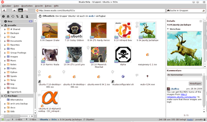

Wuala
Archivierte Anleitung
Dieser Artikel wurde archiviert, da er - oder Teile daraus - nur noch unter einer älteren Ubuntu-Version nutzbar ist. Diese Anleitung wird vom Wiki-Team weder auf Richtigkeit überprüft noch anderweitig gepflegt. Zusätzlich wurde der Artikel für weitere Änderungen gesperrt.
Anmerkung: Wuala hat seinen Dienst zum 15. November 2015 komplett eingestellt  .
.
Zum Verständnis dieses Artikels sind folgende Seiten hilfreich:
Wuala ist eine kommerzielle Online-Festplatte. Jeder Benutzer bekommt dabei "Festplattenspeicher" in der Cloud, über den er frei verfügen kann.. Der Benutzer hat dabei die Wahl, ob die von ihm hochgeladenen Dateien nur für ihn, nur für bestimmte Personen, innerhalb bestimmter Gruppen oder für alle Wuala-Nutzer zugänglich sein sollen. Filme und Audiodateien können nach der Integration in das Dateisystem direkt ohne Download geöffnet und gestreamt werden.
Start¶
Wuala muss nicht installiert werden (dies steht aber als Option bereit, siehe unten). Es genügt der Besuch auf Wuala.com und ein  -Klick auf die Schaltfläche "Starten", um zu beginnen.
-Klick auf die Schaltfläche "Starten", um zu beginnen.
Installation¶
Wuala wird aktiv in Java entwickelt und kann auch normal auf dem eigenen Rechner installiert werden. Hier ist die nun beschriebene Methode "Lokale Installation" zu bevorzugen. Danach ist die Installation abgeschlossen.
Nur wer eine portable Version wirklich benötigt, sollte wie im Abschnitt Portable Installation vorgehen.
Fremdpaket¶
Um Wuala lokal zu installieren, muss von der Download-Seite  das angegebene Paket heruntergeladen und installiert[1] werden. Dabei wird eine Fremdquelle hinzugefügt, sodass man künftige Aktualisierungen automatisch erhält.
das angegebene Paket heruntergeladen und installiert[1] werden. Dabei wird eine Fremdquelle hinzugefügt, sodass man künftige Aktualisierungen automatisch erhält.
Hinweis!
Fremdpakete können das System gefährden.
Alternative Installationen¶
Portable Installation¶
Für eine portable Installation muss von der Download-Seite das wuala.tar.gz-Archiv im Unterpunkt "Andere Distributionen" heruntergeladen, entpackt[4] und mit einem Klick auf die Datei wuala im entpackten Verzeichnis gestartet werden.
Benutzung/Konfiguration¶
Allgemeine Einstellungen¶
Unter "Bearbeiten -> Einstellungen" sollten zuerst einige Anpassungen vorgenommen werden. So kann unter "Verbindung" die bereitgestellte Bandbreite für den Up- bzw. Download eingestellt werden. Auch lässt sich dort in Erfahrung bringen, ob die genutzte Internet- Verbindung prinzipiell geeignet ist, um am Speichertausch-Programm teilzunehmen. Unter "Lokaler Cache" kann die Größe des Caches einstellen werden, den Wuala maximal nutzt. Schließlich kann unter "Konto" der Filter für "jugendgefährdende" Inhalte ein- und ausgeschaltet werden.
Autostart¶
Möchte man Wuala automatisch starten, so kann man dies einfach in die Autostart gemäß des Artikels machen. Die Befehlszeile sollte aber noch wie folgt angepasst werden:
wuala -silent
Wuala zeigt dann das entsprechende Icon im Systemabschnitt der Kontrollleiste und verbindet sich automatisch. Das Programmfenster von Wuala öffnet sich aber nicht.
Grundlegendes zur Nutzung¶

Freigaben¶
Grundsätzlich werden bei Wuala drei Arten von Freigaben unterschieden: Private Dateien, die nur für den jeweiligen Benutzer zu sehen sind (gelbe Ordner), Gruppenfreigaben, die nur für bestimmte Gruppen, Personen oder Geheimlink einsehbar sind (rot) und globale Freigaben, die für jeden Wuala-Nutzer zugänglich sind (blau). Ein Ordner kann per " -> Freigabeoptionen" freigegeben werden; die Freigabe einzelner Dateien ist aufgrund des verwendeten Sicherheitssystems nicht möglich (laut Forum
-> Freigabeoptionen" freigegeben werden; die Freigabe einzelner Dateien ist aufgrund des verwendeten Sicherheitssystems nicht möglich (laut Forum  ), jedoch kann mit "-Klick -> Kopieren (Link)" auf eine Datei ein Link auf diese Datei kopiert werden.
), jedoch kann mit "-Klick -> Kopieren (Link)" auf eine Datei ein Link auf diese Datei kopiert werden.
Gruppen¶
Gruppen können privat und öffentlich sein. Über die Mitgliedschaft in privaten Gruppen entscheidet der Gründer der Gruppe oder ein von diesem eingesetzter Administrator / Moderator. Die Inhalte von privaten Gruppen sind für Nicht-Mitglieder nicht einsehbar. Die Inhalte von öffentlichen Gruppen sind für jedes Wuala-Mitglied einsehbar und können durch Gruppenmitglieder verändert werden. Die Mitgliedschaft in öffentlichen Gruppen kann durch einen simplen Mausklick "erworben" werden.
Speicher¶
Unabhängig davon, ob ein Benutzer nun Dateien in einen privaten Ordner oder eine Gruppe lädt, wird der dazu nötige Speicherplatz immer ihm angerechnet. In Gruppen kopierte Dateien sind dabei nur eine Kopie und belegen den eigenen Speicher nicht mehrfach. Allerdings lassen sich Dateien komplett von Benutzern kopieren und somit auf einen anderen Benutzer übertragen.
Synchronisieren¶
Möchte man Ordner zwischen mehreren Computern synchronisieren, klickt man in Wuala mit auf den zu synchronisierenden Ordner und wählt "Mit diesem Rechner synchronisieren…". Anschließend wir gefragt, wo der Ordner auf der Festplatte gespeichert werden soll.
Sicherheit¶
Wuala ist keine Freie Software sondern sogenannte Closed Source, sodass man keine Aussagen darüber treffen kann, wie sicher es tatsächlich ist. Wuala nutzt eine neuartige Methode der Verschlüsselung, die Cryptree genannt wird.
Alle Dateien werden grundsätzlich vor dem Hochladen auf die Server und P2P-Cloud verschlüsselt. Die Verschlüsselung erfolgt dabei unabhängig vom Passwort des Nutzers, sondern über eine Passphrase der verschlüsselnden Datei. Diese Passphrase wird hierarchisch mit einer Schlüsselliste höhergeordneten Ebenen weiterverschlüsselt, bis sie zum Schluss mit dem Hauptschlüssel des Nutzers verschlüsselt wird. Über diese baumähnliche Verschlüsselung ist eine hohe Sicherheit gewährleistet, die außerdem in der Lage ist, Ordner und Dateien teilweise öffentlich zu machen. So können laut Wuala auch die Wuala-Betreiber selbst die Dateien nicht einsehen.
Alle Dateien werden mittels AES 256-Bit verschlüsselt. Die Authentifizierung des Nutzers erfolgt über die Wuala-Server mittels RSA 2048-Bit -
laut FAQ
Integration in das Dateisystem¶
Wuala bietet die Möglichkeit, die Onlinefestplatte in das Dateisystem der lokalen Linux-Installation zu mounten, so dass man darauf zugreifen kann, wie auf jedes andere Laufwerk auch. Dadurch kann man unter anderem auch Filme direkt starten ohne sie zuerst komplett herunter laden zu müssen.
FUSE¶
Seit November 2009 kann anstelle von NFS das Filesytem in Userspace als Dateisystemintegration genutzt werden. Seit Mai 2010 wird NFS nicht mehr unterstützt. Es müssen folgende Pakete dafür installiert [1] werden (automatisch, falls "Lokale Installation" verwendet wurde) :
libfuse2
fuse-utils
 mit apturl
mit apturl
Paketliste zum Kopieren:
sudo apt-get install libfuse2 fuse-utils
sudo aptitude install libfuse2 fuse-utils
Mehr Speicher erhalten¶
Um mehr Onlinespeicher zu erhalten, kann zusätzlicher Speicherplatz gekauft werden. Weiterhin ist es möglich, bis zu zehn Nutzer zu werben und dabei für jeden geworbenen Nutzer jeweils 1 GB zusätzlichen Speicherplatz (für ein Jahr) zu erhalten; den dafür nötigen Link findet man unter "Bearbeiten -> Einstellungen -> Speicher -> Einladungen".
- Erstellt mit Inyoka
-
 2004 – 2017 ubuntuusers.de • Einige Rechte vorbehalten
2004 – 2017 ubuntuusers.de • Einige Rechte vorbehalten
Lizenz • Kontakt • Datenschutz • Impressum • Serverstatus -
Serverhousing gespendet von